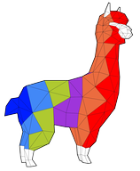

Used in research.
Engineers, architects and students use Alpaca4d to study shells and domes, tall buildings under earthquakes, embodied carbon and 3D-printed structures. These are the papers, theses and articles we know of that use or cite it, newest first.
2026
-
Journal article
Tall buildings with diagrids: design exploration and assessment of the influence of the architectural form on the structural behavior
Kazemi, P., Entezami, A., Turrin, M., Andriotis, C., Mariani, S. and Ghisi, A.
Structures, 93, 113161
-
Journal article
Shaping efficiency: parametric design for Schwedler domes
Ibrahim, A. F. A. O., Jeleniewicz, K. and Piekarczuk, A.
Materials, 19(9), 1772
-
Conference paper
Development of an integrated decision-support platform for WLCA in the early-design stage
Liu, C.-L. and Tsay, Y.-S.
E3S Web of Conferences, 716, 04015
2025
-
Conference paper
Conformal 3D printing on bending-active formwork: structural implications of toolpath strategies and interlayer timing
Wang, S. and Schleicher, S. · UC Berkeley
Proceedings of the IASS Annual Symposium 2025, Mexico City
-
Book chapter
Integrating dynamic seismic simulation in architectural design: a parametric approach for tall buildings with outer diagrids
Kazemi, P., Turrin, M., Andriotis, C., Entezami, A., Mariani, S. and Ghisi, A.
In Aşut, S. and Bianchi, S. (eds.), A Perspective in Interdisciplinary Built Environment Education: Computation for Earthquake Resilience, TU Delft OPEN Publishing, 263–290
-
Book chapter
SeismoSolve
Bakker, A. and Khoshnevis, Z. · TU Delft student project
In Aşut, S. and Bianchi, S. (eds.), A Perspective in Interdisciplinary Built Environment Education: Computation for Earthquake Resilience, TU Delft OPEN Publishing, 303–308
-
Conference paper
Advanced optimization of geodesic dome structures: minimizing frame volume and structural complexity through integrated evolutionary algorithms
Sardone, L., Sotiropoulos, S. and Fiore, A.
Proceedings of the International Conferences on Digital Technology Driven Engineering 2024, Lecture Notes in Civil Engineering, Springer, 312–324
2024
-
Journal article
Structural and embodied carbon performance optimization for low carbon buildings through BIM-based integrated design
Kathiravel, R. and Feng, H.
Journal of Building Engineering, 98, 111008
-
Journal article
Technology gap analysis on the BIM-enabled design process of prefabricated buildings: an autoethnographic study
Zhou, D., Chen, L., Wei, G., Zhang, J., Guo, P., Wang, H., Zhao, J. and Huang, W.
Buildings, 14(11), 3498
-
Journal article
Revisiting Eladio Dieste's walls through digital design and simulation technologies: a case on Atlántida Church
Eldemir Kara, C., Arslan Selçuk, S., Er Akan, A. and Ünay, A. İ.
Civil Engineering and Architecture, 12(5), 3414–3425
-
Journal article
Computational earthquake management: an educational perspective
Aşut, S.
Journal of Design for Resilience in Architecture and Planning, 5(2), 229–245
-
Conference paper
Algorithm-aided design and analysis for the comparative models study of Heinz Isler's shells
Pellegrino, M., Sardone, L., Rosso, M. M., Gozzi, V. and Chiaia, B.
Shell and Spatial Structures (IWSS 2023), Lecture Notes in Civil Engineering, Springer, 512–521
-
Conference paper
A parametric approach to the morphological structural analysis of thin hyperbolic paraboloid shells
Russo, M., Gabriele, S., Adriaenssens, S. and Currà, E.
Shell and Spatial Structures (IWSS 2023), Lecture Notes in Civil Engineering, Springer, 329–342
-
Conference paper
Generative design process and optimization of geodesic dome with variable frequency
Sardone, L., Rosso, M. M., Melchiorre, J. and Pellegrino, M.
Shell and Spatial Structures (IWSS 2023), Lecture Notes in Civil Engineering, Springer, 289–298
-
Magazine article
Progettazione architettonica e analisi assistita da algoritmi generativi. Un approccio comparativo alle opere di Heinz Isler
Sardone, L.
Archi, 4/2024, “Heinz Isler e la sua eredità nella progettazione digitale”
2022
-
Conference paper
An expeditious parametric approach for city information modeling and finite element analysis
La Russa, F. M., Intelisano, M., Galizia, M., Caliò, I. and Santagati, C.
The International Archives of the Photogrammetry, Remote Sensing and Spatial Information Sciences, XLVI-2/W1-2022, 307–314
-
PhD thesis
3DCITYGH: an expeditious parametric approach for digital urban survey and city information modeling of city-block structural models
La Russa, F. M.
University of Catania
-
Online article
FEM in Grasshopper: the ultimate analysis software list
Wojslaw, K.
BIM Corner
Using it in a paper?
Cite Alpaca4d with the version you used, so readers can find the same tool, and cite OpenSees for the solver underneath.
Pellegrino, M. Alpaca4d: OpenSees for Grasshopper, version x.y.z. https://alpaca4d.github.io
@software{alpaca4d,
author = {Pellegrino, Marco},
title = {Alpaca4d: OpenSees for Grasshopper},
version = {x.y.z},
url = {https://alpaca4d.github.io}
}

Used Alpaca4d in your work?
Send us your paper, thesis or article at alpaca4d@gmail.com and we will add it here.